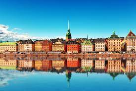

Sztokholm
Sztokholm - stolica i największe miasto (tätort) Szwecji, główny ośrodek polityczny, ekonomiczny i kulturalny kraju. Siedziba rządu i parlamentu Szwecji oraz szwedzkiej rodziny królewskiej.
Siedziba władz (residensstad) regionu administracyjnego (län) Sztokholm oraz ośrodek administracyjny (centralort) gminy Sztokholm (Stockholms kommun lub Stockholms stad).
Miasto zostało założone według tradycji w 1252 roku przez jarla Birgera. Od początku XV w. Sztokholm zaczął pełnić rolę głównego ośrodka kraju. W 1436 roku zostały nadane przywileje miejskie. Status stolicy Szwecji został oficjalnie potwierdzony w akcie o formie rządu z 1634 roku (1634 års regeringsform).
Największe pod względem zaludnienia miasto Szwecji, główny ośrodek obszaru metropolitalnego Storstockholm (pol. „Wielki Sztokholm”), liczącego 2 336 404 mieszkańców (30 września 2018). W skład obszaru metropolitalnego Storstockholm wchodzą wszystkie gminy regionu administracyjnego (län) Sztokholm.
W 2015 roku część tätortu Sztokholm leżąca w granicach administracyjnych gminy Sztokholm liczyła 890 640 mieszkańców. W 2020 tätort Sztokholm liczył 1 617 407 mieszkańców. 30 września 2018 roku gmina Sztokholm (Stockholms stad) liczyła 960 031 mieszkańców. Ukradzione z wikipedii

Niektórzy badacze wywodzą nazwę miasta od stock – pień, pal, belka i holme – wyspa, wysepka.
Miasto po raz pierwszy pojawia się w staroskandynawskich sagach jako Agnafit (lub Agnefit) i jest łączone z mitologicznym królem szwedzkim, Agne. Pierwszy raz Sztokholm pojawia się w dokumentach w roku 1252.
Rozwój miasta rozpoczął się w XIII wieku od części zwanej dzisiaj Gamla Stan – Stare Miasto. Za założyciela miasta uważany jest jarl Birger Magnusson, dzięki któremu miasto bardzo szybko uzyskało duże znaczenie w handlu. Po okresie walk szwedzko-duńskich w XV i XVI wieku, w 1523 Sztokholm został zdobyty ostatecznie przez Gustawa I Wazę. Od tego czasu też siedzibą szwedzkich królów był zamek Tre Kronor. W 1697 roku pożar strawił większość budowli i od 1754 rodzina królewska zamieszkała już w Pałacu Królewskim. W 1776 roku powstała tu Akademia Szwedzka.
W połowie XIX wieku stolica Szwecji liczyła blisko 100 tysięcy mieszkańców. W Sztokholmie rozgrywane były Letnie Igrzyska Olimpijskie w 1912. Po II wojnie światowej, w 1952 uruchomiono w mieście pierwszą linię metra.